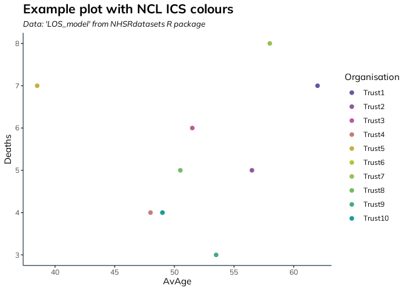

This package provides ggplot2 themes and colour palettes, as well as rmarkdown templates for use by NCL ICB analytical teams.
Install Instructions
This package can be installed using devtools or remotes:
devtools::install_github("ncl-icb-analytics/NCLRtemplates")
remotes::install_github("ncl-icb-analytics/NCLRtemplates")All of the exported functions start with the prefix “ncl_theme_”, except for the ggplot2 gradient colour scale functions, which are of the form scale_*_ncl.
Usage
When using it for the first time, please run the set-up function:
The set-up function makes sure you have the right environmental variables set up for the markdown templates to read, and installs the NCL style guide font ‘Mulish’, along with ‘Open Sans’.
Example
To use NCL colours and theme in ggplot2, use the functions in this package, such as:
library(NCLRtemplates)
library(NHSRdatasets)
library(ggplot2)
library(dplyr)
data(LOS_model)
LOS_model %>%
group_by(Organisation) %>%
summarise(Deaths = sum(Death)) %>%
ggplot(aes(y=Deaths, x = Organisation, fill=Organisation))+
geom_col() +
scale_fill_ncl()+
labs(title = "Example plot with NCL ICS colours", subtitle = "Data: 'LOS_model' from NHSRdatasets R package")+
theme_nclicb()
LOS_model %>%
group_by(Organisation) %>%
summarise(Deaths = sum(Death),
AvAge = median(Age)) %>%
ggplot(aes(y=Deaths, x = AvAge, col=Organisation))+
geom_point(size=2) +
scale_colour_ncl()+
labs(title = "Example plot with NCL ICS colours", subtitle = "Data: 'LOS_model' from NHSRdatasets R package")+
theme_nclicb()
The packages documentation can be found here.